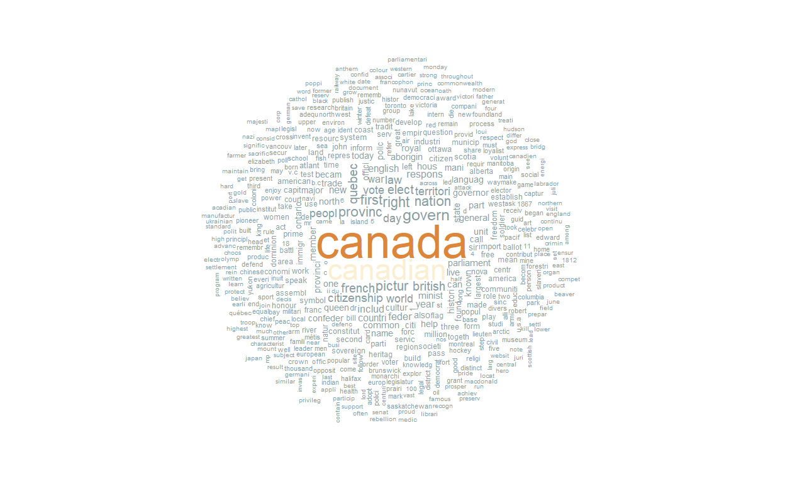

Discover Canada is a study guide that is a required read for anyone preparing for the Canadian citizenship test. It contains information on Canadian government, culture and geography.
There is also a lot of history sprinkled throughout the text, containing the exact year when something important happened. For example, the current border between Canada and The United States of America was partly a result of the 1812 war between the two countries.

Can I use R to create a history timeline?
As a new reader, trying to remember all of the Canadian histoy seems very daunting. I personally prefer a timeline with year and what happened information. So, I initially thought to create something like that by hand, but then:
- I recalled that Discover Canada is also available as a pdf and I could potentially import it in
Ras text - I had heard the term corpus used for text documents in
R, and thought that I could maybe convert the imported text into a corpus. A recent R Ladies webinar showed exactly how (Thank you R-Ladies Tunis!) - With text in
R, I could use thetidytextpackage to extract the sentences and then get the history by years - Finally, I could create a table with history in each year in increasing order using
reactablepackage. My starting point here was Tom Mocks blog (thanks Tom!)
Step 1: From pdf to dataframe
I started by loading the pdftools and quanteda libraries for reading the Discover Canada pdf file and converting it into a corpus.
I first downloaded the large print pdf file from the Discover Canada website. Following shows the page 13 from the pdf:

Next, I read this file in R:
[1] " STUDY GUIDE\r\n Discover Canada\r\nThe Rights and Responsibilities of Citizenship\r\n LARGE PRINT\r\n"
[2] " 2\r\n\t\r \r\n"
[3] "The Oath of Citizenship\r\nI swear (or affirm)\r\nThat I will be faithful\r\nAnd bear true allegiance\r\nTo Her Majesty Queen Elizabeth the Second\r\nQueen of Canada\r\nHer Heirs and Successors\r\nAnd that I will faithfully observe\r\nThe laws of Canada\r\nAnd fulfil my duties as a Canadian citizen.\r\nLe serment de citoyennet\r\nJe jure (ou jaffirme solennellement)\r\nQue je serai fidle\r\nEt porterai sincre allgeance\r\n Sa Majest la Reine Elizabeth Deux\r\nReine du Canada\r\n ses hritiers et successeurs\r\nQue jobserverai fidlement les lois du Canada\r\nEt que je remplirai loyalement mes obligations\r\nde citoyen canadien.\r\n 3\r\n\t\r \r\n" The next step was to convert the raw text into a corpus. This is possible with the corpus() function from the quanteda package:
The quanteda::docvars() function lets you find the existing variables and create new variables for the documents in a corpus. There were 129 text documents in dc_corpus (you can find it with length(dc_corpus)). We know that there is only 1 document that I am using here, but the pdftools::pdftext() function split the original text into 129 parts. Thats why the corpus now has 129 documents.
Interlude: Tokenization and Visualization of Text Data
Now that the data is living in a corpus, there is a lot that I can do in terms of text analysis. For instance, this awesome post by the R-Ladies presenter, Cosima Meyer introduces the terms for natural language processing and also shows how to clean and visualize text data. Based on that code, I produced a word cloud in three steps below, all powered by the quanteda package:
- Pre-process the text by removing punctuation, symbols and URL, and splitting the hyphenated words. This pre-processed result is called as tokens.
# Text pre-processing
dc_tokens <- tokens(
# Takes the corpus
dc_corpus,
# Remove punctuation
remove_punct = TRUE,
# Remove symbols
remove_symbols = TRUE,
# Remove URL
remove_url = TRUE,
# Split up hyphenated words
split_hyphens = TRUE
)
head(dc_tokens, 3)
Tokens consisting of 3 documents.
text1 :
[1] "STUDY" "GUIDE" "Discover"
[4] "Canada" "The" "Rights"
[7] "and" "Responsibilities" "of"
[10] "Citizenship" "LARGE" "PRINT"
text2 :
[1] "2"
text3 :
[1] "The" "Oath" "of" "Citizenship"
[5] "I" "swear" "or" "affirm"
[9] "That" "I" "will" "be"
[ ... and 87 more ]- Create a document-feature matrix (DFM). DFM estimates the frequency of each word (feature) across all the text components (documents). While creating DFM you can also stem words. Stemming refers to finding the common root of several words. For example, government and governor have the same root govern. Moreover, you can remove the stopwords that are common words in the language e.g.the, are, etc.
# Calculate a document-feature matrix (DFM)
dc_dfm <- dfm(
# Take the token object
dc_tokens,
# Lower the words
tolower = TRUE,
# Get the stem of the words
stem = TRUE,
# Remove stop words
remove = stopwords("english")
)
dc_dfm
Document-feature matrix of: 129 documents, 3,008 features (97.7% sparse).
features
docs studi guid discov canada right respons citizenship larg print
text1 1 1 1 1 1 1 1 1 1
text2 0 0 0 0 0 0 0 0 0
text3 0 0 0 4 0 0 1 0 0
text4 0 0 0 5 1 0 1 0 0
text5 0 0 0 5 2 2 4 0 0
text6 0 1 0 2 2 1 1 0 0
features
docs 2
text1 0
text2 1
text3 0
text4 0
text5 0
text6 0
[ reached max_ndoc ... 123 more documents, reached max_nfeat ... 2,998 more features ]- Create a wordcloud:
suppressPackageStartupMessages(library(wesanderson))
textplot_wordcloud(
# Load the DFM object
dc_dfm,
# Define the minimum number the words have to occur
min_count = 3,
# Define the maximum number the words can occur
max_words = 500,
# Define a color
color = wes_palette("Royal1")
)

As expected, canada was the most common word across all the paragraphs of text.
Going back to our task of creating a dataframe out of the corpus, the following code shows how to do that (thanks to this answer on stackoverflow):
suppressPackageStartupMessages(library(tidyverse))
# Corpus to dataframe
dc_df <- data.frame(text = sapply(dc_corpus, as.character),
stringsAsFactors = FALSE, row.names = NULL) %>%
as_tibble()
head(dc_df, 3)
# A tibble: 3 x 1
text
<chr>
1 " STUDY GUIDE\n Discover Canada\nThe Rights a~
2 " 2\n\t\n \n"
3 "The Oath of Citizenship\nI swear (or affirm)\nThat I will be faith~Step 2: Split the text paragraph in each row into sentences
I used the tidytext package for this step:
suppressPackageStartupMessages(library(tidytext))
## divide into sentences
dc_df_sent <- dc_df %>%
unnest_tokens(output = sentence, input = text, token = "sentences")
head(dc_df_sent, 3)
# A tibble: 3 x 1
sentence
<chr>
1 study guide discover canada the rights and responsibilit~
2 2
3 the oath of citizenship i swear (or affirm) that i will be faithful~Step 3: Find the sentences containing years
I found all those sentences that contained a four-digit number that indicated a year in the text. Then I filtered out all other sentences and sorted the dataframe by year:
## Find which sentence has a 4 digit number
dc_df_year <- dc_df_sent %>%
mutate(
has_a_num = str_detect(string = sentence, pattern = "[[:digit:]]{4}")
) %>%
filter(has_a_num == TRUE) %>%
mutate(
year = str_extract(string = sentence, pattern = "[[:digit:]]{4}") %>%
as.numeric()
) %>%
select(year, sentence) %>%
arrange(year)
head(dc_df_year, 2)
# A tibble: 2 x 2
year sentence
<dbl> <chr>
1 1215 together, these secure for canadians an 800-year old traditio~
2 1497 picture: (top) indian encampment, fur trade era picture: (rig~Step 4: Create a table of year and relevant history:
Finally, I used the reactable package to create an interactive table that contained year as a group. Clicking on a year group reveals history in one or more sentences from Discover Canada:
Show code
suppressPackageStartupMessages(library(reactable))
reactable(
dc_df_year,
groupBy = "year",
searchable = TRUE,
filterable = TRUE,
resizable = TRUE,
onClick = "expand",
showPageSizeOptions = TRUE,
columns = list(
year = colDef(name = "Year", maxWidth = 250),
sentence = colDef( name = "What happened?")
),
theme = reactableTheme(backgroundColor = "#eadbcb")
)
I am now ready to delve into the Discover Canada study guide further. Ideally, I want to extract the most useful phrases from each sentence for a given year, but at this point I do not know the best way to do that programmatically. If you have any ideas, please share with me on twitter.